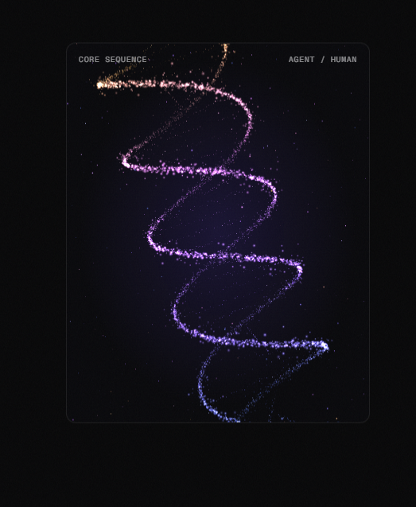
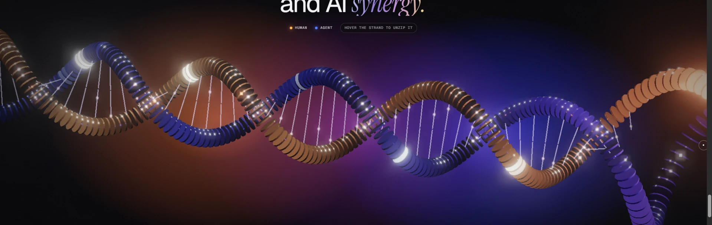

A concept website for the agentic-AI company where I did my design internship, and this is its case study: how I’d redesign the site so an enterprise buyer understands six products in one scroll, and trusts the team that built them.
Strong products, and a site that didn’t yet show them: generic AI imagery, broad claims, and six cards that gave every product the same weight.
The approach
Three principles, then five decisions measured against them. Built in code so motion and 3D could be judged for real, not imagined in a mockup.
What changed
6 → 1Six identical product cards became one connected product story.
4 → 0Stock AI visuals and unbacked claims, all removed.
1 → 11One repeated section template became 11 layouts, each built for its content.
12 → 18.5pxSmallest paragraph text, so nothing needs squinting.
The starting point
Strong products, and room to show them better.
The company, where I interned, builds agentic AI for enterprises: six products and four service lines. The ingredients were there; my aim was to let the products speak more clearly. Four opportunities stood out on the first screen.
1234
Starting point: the company’s site at the time.
1
Imagery
A neural-globe render signals AI in general; a custom visual could signal this company.
2
Headline
The gradient carries the emphasis; the words could carry it instead.
3
Background
Light streaks sit behind the navigation and compete for attention.
4
First action
“Launch Platforms” could say more clearly what happens next.
Further down: broad claims such as “100% client satisfaction”, six product cards with equal weight, and one section template repeated to the footer.
How might we
help an enterprise buyer understand six products in one scroll, and trust the team behind them?
Principle 1
Show, don’t claim
Every superlative is replaced by something you can see or check.
Principle 2
One story, six products
The products share one stage, and each gets its own moment on it.
Principle 3
Calm by default, alive on intent
The page stays quiet until you scroll, hover or click.
Five decisions
Each one tied to a principle, each with a cost.
01
One crafted object instead of stock AI art
Principle 1 · Show, don’t claim
Why
A stock render signals AI in general. One object made for the brand says someone cared.
What I did
A 3D wave of glossy rounded-square discs that builds itself on load, fans open under the cursor and twists on scroll.
Trade-off
It costs GPU time, so it only renders while visible, at a capped resolution.
02
Six products, one story
Principle 2 · One story, six products
Why
Identical cards flatten the offer. An agent and a vision product should not feel the same.
What I did
One pinned panel beside the list. Its light changes colour and shape as each product comes into view.
Trade-off
A pinned panel doesn’t work on phones, so there each product carries its own image instead.
03
Proof instead of adjectives
Principle 1 · Show, don’t claim
Why
Enterprise buyers trust outcomes they can check, not superlatives.
What I did
Replaced broad claims with room for case studies and measured results.
Trade-off
It needs real client data and permission before launch. The concept holds the space with placeholders.
04
One motion language
Principle 3 · Calm by default
Why
Motion should confirm what you did, not perform for you.
What I did
One gradient underline for links, fills that stay inside buttons, borders that trace on hover, slower scroll.
Trade-off
Fewer “wow” moments per element. The 3D carries the spectacle so the interface can stay quiet.
Button fills, slowed close-up. The button never moves; only the fill does.
05
Readable before beautiful
Principle 3 · Calm by default
Why
Early drafts used small monospace labels. They looked technical and were hard to read.
What I did
Funnel Display and Funnel Sans with one serif accent, body text at 22px, every label checked for contrast.
Trade-off
Bigger type means fewer words per screen, so the copy had to be cut to fit.
What I threw away
Most of the work was deciding what to remove.
“Our DNA”, three times
The section about the company’s people needed one image for humans and AI working together.

v1Particle helix
Boxed in and decorative. It said nothing about humans or agents.

v2Glass and glow
Read like a stock 3D render, the exact thing principle 1 rejects.
FinalTwo strands
Human and agent strands in the brand colours, unzipping under the cursor.
The ending, simplified
The last screen has one job: get the click.
BeforeRings into fluted glass
Impressive, and it buried the call to action under the effect.
FinalContained, then quiet
The rings stay under the headline and the footer stays still.
The system
Dark, quiet, one colour story.
Near-black lets the 3D carry the colour. The palette keeps the company’s blue and violet and brings in the orange its logo already had but never used.
Ink#050506
Blue#4F7BFF
Violet#8B5CF6
Orchid#E879F9
Amber#FFB547
Aa
Funnel DisplayHeadlines and numbers
Aa
Funnel SansText and interface
Aa
Instrument Serif ItalicOne accent word per headline
Element
Behaviour
Why
Links
A gradient underline draws in from the left and leaves to the right.
One cue for “this goes somewhere”.
Buttons
A fill wipes across inside; the button never moves.
A button that moves is harder to hit.
Grid cards
A line traces the border; a crosshair follows the cursor.
It shows the grid is the system.
Hero
Discs fan open under the cursor.
Rewards curiosity without blocking reading.
Scroll
About 45% slower, eased.
Gives the 3D scenes room.
Reduced motion
All of the above off.
Respects the setting, always.
Craft
Checked, not just designed.
I reviewed it the way a team would before shipping: with scripts, not just my eyes.
Built with AI pair-programming (Claude Code). Every decision, review and fix was mine.
3screen widths audited on every change: 375, 1024, 1440px
10+layout bugs found and fixed with scripted checks
5WebGL scenes, each paused while off screen
A card row sat 900px off-screenA centring rule on an over-wide row; anchored it to the edge.
The floating nav touched the screen edgeIts max width beat the viewport at 1024px; capped it to the margins.
Two buttons measured equal but looked unequalA faint border vanished on dark; gave both the same visible edge.
Moments scroll sideways while the page holds still.On a phone.
Reflection
The hardest part wasn’t the 3D. It was deciding what to remove.
What I learned
Design motion in the real medium. 3D looked different in code than in my head.
Write the check, don’t eyeball it. Scripts found bugs I would have shipped.
Restraint is a decision. Every effect had to earn its place against a principle.
What I’d do next
Start from real content and client data.
Test the product story with two or three buyers before polishing.
Set a performance budget on a mid-range phone from day one.
An unofficial redesign concept, not the company’s live site. Screens use a placeholder brand (Vantyx) and placeholder data; no business results are claimed.